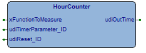

HourCounter
Inputs & Sensors
Basic
FunctionBlock
v1.2.3
FBD Diagram

hourcounter.png
Description

The brick counts the worked seconds of the input function and saves its value, every 20 minutes, in persistent register.
VERY IMPORTANT: due to periodically saving in persistent memory, operation that requires tens of ms time, it is suggested to put this brick in Background Task.
The easier way to do is to create a new FB program (i.e. MainLogicBG), and there, to put this brick.
Inputs (3)
| Name | Type | Init | Description |
|---|---|---|---|
| xFunctionToMeasure | BOOL | BOOLEAN, range [FALSE,TRUE]. It is the function under time measure | |
| udiTimerParameter_ID | UDINT | UNSIGNED DOUBLE INT, range [0, 4294967295]. Parameter ID of time counter. | |
| udiReset_ID | UDINT | UNSIGNED DOUBLE INT, range [0, 4294967295]. Variable ID of command to reset counter. |
Outputs (1)
| Name | Type | Description |
|---|---|---|
| udiOutTime | UDINT | UNSIGNED DOUBLE INT, unit [s], range [0, 4294967295]. Worked time of input function. |
Local Variables (8)
| Name | Type | Description |
|---|---|---|
| xFirstLoopDone | BOOL | |
| xCountReset | BOOL | |
| udiData | UDINT | |
| tsTmSave | TTimerSec | |
| tsTm | TTimerSec | |
| error | SwdcError_t | |
| xReset | BOOL | |
| xStatus | BOOL |
Source Code (ST)
IF (xFirstLoopDone = FALSE) THEN
xFirstLoopDone := TRUE;
xStatus := FALSE;
tsTmSave.Start();
error := Database_GetValueU32(1,udiTimerParameter_ID,?udiData);
END_IF;
IF (xFunctionToMeasure = TRUE) THEN
IF (xStatus = FALSE) THEN
tsTm.Start();
xStatus := TRUE;
END_IF;
udiOutTime := udiData + tsTm.ElapsedSec();
ELSE // EN == 0
IF (xStatus = TRUE) THEN
udiData := udiData + tsTm.ElapsedSec(); // update with last counting
xStatus := FALSE;
END_IF;
udiOutTime := udiData;
END_IF;
IF ((tsTmSave.ElapsedSec() >= (20 * 60)) OR // save every 20 minutes
(sysIsSimulMode AND tsTmSave.ElapsedSec() >= 5*60)) THEN // or every 1 minuto if in simulation
udiData := udiOutTime;
error := Database_SetValueU32(1, udiTimerParameter_ID,udiData);
tsTm.Start();
tsTmSave.Start();
END_IF;
error := Database_GetValueBool(1,udiReset_ID,?xReset);
IF (xReset = TRUE) THEN
IF (xCountReset = FALSE) THEN
xCountReset := TRUE;
error := Database_SetValueU32(1, udiTimerParameter_ID, 0);
udiData := 0;
udiOutTime := 0;
tsTm.Start();
tsTmSave.Start();
ELSE
xCountReset := FALSE;
error := Database_SetValueBool(1,udiReset_ID, FALSE);
END_IF;
ELSE
xCountReset := FALSE;
END_IF;
(* Original
// public
BOOL EN;
BOOL RESET;
DINT OUT;
BOOL SAVE; // flag to trigger saving data in eeprom
DINT DATA; // copy of the value saved in eepprom
// private
TTimerSec tmSave;
TTimerSec _tm;
BOOL _status;
void Init()
{
_status = 0;
SAVE = 0;
tmSave.Start();
}
void Main()
{
if(EN == 1) {
if(_status == 0) {
_tm.Start();
_status = 1;
}
OUT = DATA + _tm.ElapsedSec();
}
else { // EN == 0
if(_status == 1) {
DATA = DATA + _tm.ElapsedSec(); // update with last counting
_status = 0;
}
OUT = DATA;
}
if(tmSave.ElapsedSec() > 20 * 60) { // save every 20 minutes
DATA = OUT;
SAVE = 1;
_tm.Start();
tmSave.Start();
}
if(RESET != 0) {
DATA = 0;
OUT = DATA;
SAVE = 1;
RESET = 0;
_tm.Start();
tmSave.Start();
}
}
*)